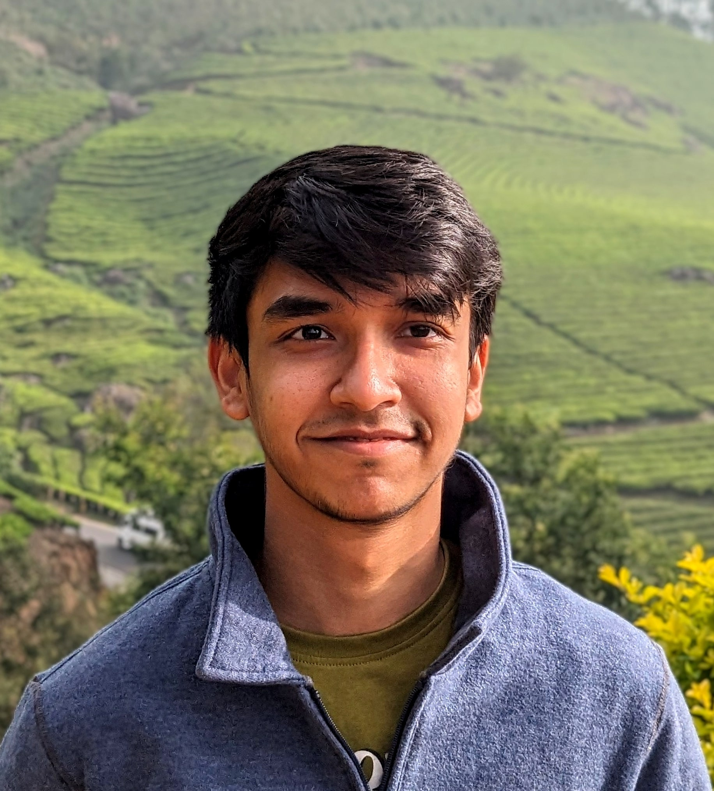

Welcome!
Hello there! My name is Satyapan Munshi and I am a PhD candidate at the Kapteyn Astronomical Institute in Groningen, Netherlands. I am passionate about research in radio astronomy and observational cosmology.
Currently, I am working in the group of Prof. Leon Koopmans, on observational 21-cm cosmology. We are trying to detect the 21-cm signal from neutral hydrogen in the early universe using low-frequency radio interferometers. More specifically, I am using the radio telescope NenuFAR to explore the Cosmic Dawn, an era when the first stars in the universe were formed.
Before coming to the Netherlands, I completed my Bachelor's and Master's in India, at the Indian Institute of Science Education and Research (IISER), Mohali with a major in physics and a minor in astronomy. For my master's thesis with Prof. Jasjeet Singh Bagla, we worked on HI intensity mapping on the Extended Groth Strip field observed with the upgraded GMRT, to derive upper limits on the 21-cm signal power spectrum in the post-reionization universe.
Outside of research, I enjoy playing racket sports, singing, and playing the piano.